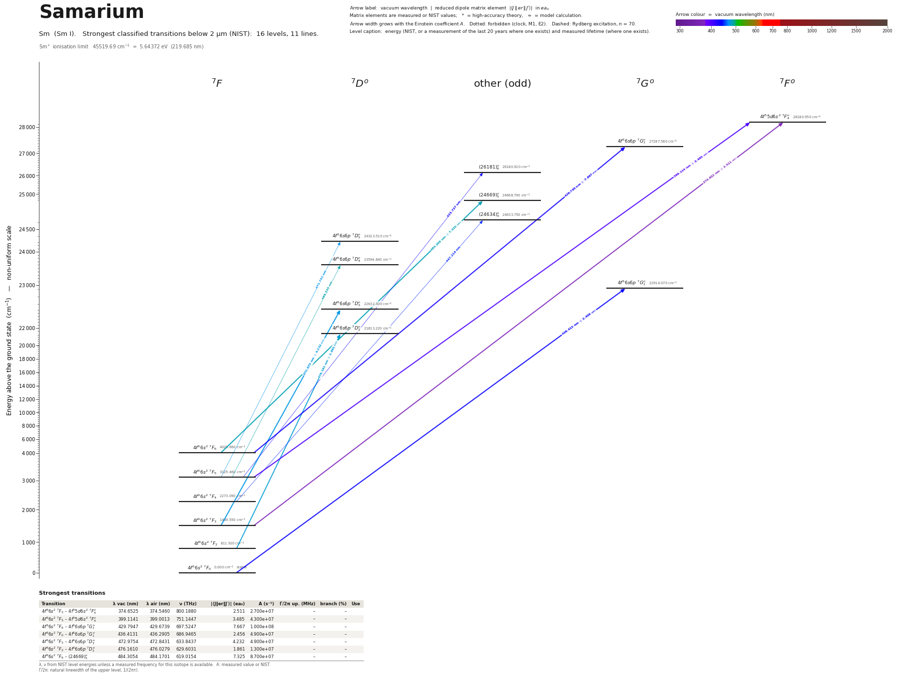

Samarium energy level diagram
Energy levels and transitions of neutral samarium (Sm I): the 90 strongest classified lines below 2 µm from the NIST Atomic Spectra Database and the 67 levels they connect, each line with its vacuum wavelength, frequency and, for 90 of them, the reduced dipole matrix element derived from the NIST transition rate. Measured lifetimes, transition rates, hyperfine constants and isotope shifts from the literature are included, each with its citation.
Hover a line or a level to isolate it, click to keep it selected. Scroll to zoom, drag to move.

Download: diagram (PDF) diagram (SVG) transitions (CSV) levels (CSV) source code

Strongest transitions of samarium
| Transition | λ vac (nm) | λ air (nm) | ν (THz) | |⟨J‖er‖J′⟩| (ea₀) | A (s⁻¹) | Γ/2π up. (MHz) | branch (%) | Use |
|---|---|---|---|---|---|---|---|---|
| 7F6 – 7F°6 | 383.5563 | 383.4475 | 781.6127 | 4.507 | 5.610e+07 | 10.4 | 85.8 | |
| 7F2 – 7F°1 | 392.6312 | 392.5201 | 763.5471 | 2.234 | 5.570e+07 | 13.84 | 64.1 | |
| 7F4 – 7F°3 | 397.5781 | 397.4657 | 754.0467 | 3.421 | 5.390e+07 | 15.76 | 54.4 | |
| 7F6 – 7G°7 | 429.7956 | 429.6747 | 697.5234 | 8.257 | 1.160e+08 | 18.51 | 99.8 | |
| 7F0 – 7G°1 | 436.4136 | 436.2910 | 686.9457 | 2.530 | 5.200e+07 | 21.8 | 38 | |
| 7F1 – 7G°1 | 442.0575 | 441.9334 | 678.1752 | 2.883 | 6.500e+07 | 21.8 | 47.4 | |
| 7F5 – (25616)°5 | 444.6397 | 444.5149 | 674.2369 | 5.044 | 5.330e+07 | 13.84 | 61.3 | |
| 7F4 – (24634)°4 | 447.2138 | 447.0883 | 670.3560 | 4.734 | 5.640e+07 | 15.92 | 56.4 | |
| 7F6 – (25840)°6 | 458.3020 | 458.1736 | 654.1374 | 5.673 | 5.210e+07 | 11.97 | 69.3 | |
| 7F1 – 7F°0 | 459.8026 | 459.6738 | 652.0025 | 2.146 | 9.600e+07 | 15.3 | 99.8 | |
| 7F2 – 7F°1 | 465.0783 | 464.9481 | 644.6065 | 3.014 | 6.100e+07 | 14.34 | 67.7 | |
| 7F2 – 7D°2 | 476.1601 | 476.0270 | 629.6043 | 4.064 | 6.200e+07 | 20.67 | 47.7 | |
| 7F1 – 7D°1 | 478.4440 | 478.3103 | 626.5988 | 3.296 | 6.700e+07 | 21.22 | 50.2 | |
| 7F6 – (24669)°5 | 484.3058 | 484.1705 | 619.0149 | 7.734 | 9.700e+07 | 15.92 | 97 | |
| 7F5 – 7D°4 | 488.5344 | 488.3980 | 613.6568 | 6.232 | 7.500e+07 | 18.29 | 65.2 | |
| 7F4 – 7D°3 | 491.1777 | 491.0406 | 610.3544 | 4.663 | 5.310e+07 | 19.41 | 43.5 |
λ, ν from NIST level energies unless a measured frequency for this isotope is available. A: measured value or NIST. Γ/2π: natural linewidth of the upper level, 1/(2πτ).
147Sm hyperfine structure (I = 7/2)
| Level | A (MHz) | B (MHz) | Shift of each F level from the centre of gravity (MHz) |
|---|---|---|---|
| 7F1 | -33.493 | -58.688 | F=5/2: +119.28 F=7/2: +75.41 F=9/2: -131.90 |
| 7G°1 | -212.620 | -9.630 | F=5/2: +951.63 F=7/2: +219.50 F=9/2: -746.58 |
Measured A, B constants; sources in the data file.
Listed Sm transitions below 2 µm
| Lower level | Upper level | λ vacuum (nm) | λ air (nm) | ν (THz) | Type | |⟨J‖er‖J′⟩| (ea₀) | A (s⁻¹) | Branching (%) | Source of matrix element / A |
|---|---|---|---|---|---|---|---|---|---|
| 7F4 | 7D°4 | 369.1134 | 369.0084 | 812.1961 | E1 | 1.711 measured | 1.310e+07 measured | 41.9 | Lawler, Fittante, Den Hartog, J. Phys. B 46, 215004 (2013), Table 3 |
| 7F3 | 7D°3 | 372.2082 | 372.1024 | 805.4428 | E1 | 1.516 measured | 1.290e+07 measured | 38 | Lawler, Fittante, Den Hartog, J. Phys. B 46, 215004 (2013), Table 3 |
| 7F3 | 7F°4 | 374.6524 | 374.5460 | 800.1882 | E1 | 2.328 measured | 2.320e+07 measured | 23.9 | Lawler, Fittante, Den Hartog, J. Phys. B 46, 215004 (2013), Table 3 |
| 7F1 | 7D°1 | 374.9583 | 374.8518 | 799.5354 | E1 | 1.268 measured | 2.060e+07 measured | 51.1 | Lawler, Fittante, Den Hartog, J. Phys. B 46, 215004 (2013), Table 3 |
| 7F2 | 7F°3 | 375.7498 | 375.6430 | 797.8513 | E1 | 2.183 measured | 2.600e+07 measured | 26.3 | Lawler, Fittante, Den Hartog, J. Phys. B 46, 215004 (2013), Table 3 |
| 7F1 | 7F°2 | 377.4411 | 377.3339 | 794.2760 | E1 | 1.709 measured | 2.200e+07 measured | 27.9 | Lawler, Fittante, Den Hartog, J. Phys. B 46, 215004 (2013), Table 3 |
| 7F0 | 7F°1 | 380.5021 | 380.3941 | 787.8864 | E1 | 1.484 measured | 2.700e+07 measured | 31.1 | Lawler, Fittante, Den Hartog, J. Phys. B 46, 215004 (2013), Table 3 |
| 7F5 | 7D°4 | 381.1038 | 380.9957 | 786.6424 | E1 | 1.849 measured | 1.390e+07 measured | 44.5 | Lawler, Fittante, Den Hartog, J. Phys. B 46, 215004 (2013), Table 3 |
| 7F6 | 7D°5 | 381.4907 | 381.3824 | 785.8447 | E1 | 2.455 measured | 2.000e+07 measured | 51.2 | Lawler, Fittante, Den Hartog, J. Phys. B 46, 215004 (2013), Table 3 |
| 7F4 | 7D°3 | 383.3893 | 383.2805 | 781.9532 | E1 | 1.603 measured | 1.320e+07 measured | 38.9 | Lawler, Fittante, Den Hartog, J. Phys. B 46, 215004 (2013), Table 3 |
| 7F6 | 7F°6 | 383.5563 | 383.4475 | 781.6127 | E1 | 4.507 measured | 5.610e+07 measured | 85.8 | Lawler, Fittante, Den Hartog, J. Phys. B 46, 215004 (2013), Table 3 |
| 7F2 | (26804)°1 | 384.7373 | 384.6282 | 779.2134 | E1 | 1.051 measured | 1.310e+07 measured | 88.4 | Lawler, Fittante, Den Hartog, J. Phys. B 46, 215004 (2013), Table 3 |
| 7F5 | (29070)°5 | 385.4389 | 385.3296 | 777.7950 | E1 | 2.424 measured | 1.890e+07 measured | 35 | Lawler, Fittante, Den Hartog, J. Phys. B 46, 215004 (2013), Table 3 |
| 7F3 | 7F°3 | 385.5671 | 385.4578 | 777.5363 | E1 | 1.752 measured | 1.550e+07 measured | 15.7 | Lawler, Fittante, Den Hartog, J. Phys. B 46, 215004 (2013), Table 3 |
| 7F4 | 7F°4 | 385.9830 | 385.8736 | 776.6985 | E1 | 2.717 measured | 2.890e+07 measured | 29.8 | Lawler, Fittante, Den Hartog, J. Phys. B 46, 215004 (2013), Table 3 |
| 7F6 | (29803)°6 | 387.8566 | 387.7467 | 772.9466 | E1 | 3.004 measured | 2.410e+07 measured | 82.9 | Lawler, Fittante, Den Hartog, J. Phys. B 46, 215004 (2013), Table 3 |
| 7F2 | 7F°1 | 392.6312 | 392.5201 | 763.5471 | E1 | 2.234 measured | 5.570e+07 measured | 64.1 | Lawler, Fittante, Den Hartog, J. Phys. B 46, 215004 (2013), Table 3 |
| 7F3 | 7F°2 | 395.3000 | 395.1881 | 758.3923 | E1 | 2.642 measured | 4.580e+07 measured | 58.2 | Lawler, Fittante, Den Hartog, J. Phys. B 46, 215004 (2013), Table 3 |
| 7F4 | 7F°3 | 397.5781 | 397.4657 | 754.0467 | E1 | 3.421 measured | 5.390e+07 measured | 54.4 | Lawler, Fittante, Den Hartog, J. Phys. B 46, 215004 (2013), Table 3 |
| 7F5 | 7F°4 | 399.1140 | 399.0012 | 751.1449 | E1 | 3.489 measured | 4.310e+07 measured | 44.4 | Lawler, Fittante, Den Hartog, J. Phys. B 46, 215004 (2013), Table 3 |
| 7F3 | (25387)°4 | 418.4513 | 418.3334 | 716.4334 | E1 | 2.025 measured | 1.260e+07 measured | 85.8 | Lawler, Fittante, Den Hartog, J. Phys. B 46, 215004 (2013), Table 3 |
| 7F2 | (24467)°3 | 422.7365 | 422.6175 | 709.1709 | E1 | 1.835 measured | 1.290e+07 measured | 81.8 | Lawler, Fittante, Den Hartog, J. Phys. B 46, 215004 (2013), Table 3 |
| 7F5 | (26471)°6 | 428.3404 | 428.2199 | 699.8930 | E1 | 4.513 measured | 4.040e+07 measured | 64.6 | Lawler, Fittante, Den Hartog, J. Phys. B 46, 215004 (2013), Table 3 |
| 7F4 | (25616)°5 | 428.4031 | 428.2826 | 699.7905 | E1 | 3.614 measured | 3.060e+07 measured | 35.2 | Lawler, Fittante, Den Hartog, J. Phys. B 46, 215004 (2013), Table 3 |
| 7F2 | 7H°3 | 428.4699 | 428.3494 | 699.6814 | E1 | 2.383 measured | 2.090e+07 measured | 44.7 | Lawler, Fittante, Den Hartog, J. Phys. B 46, 215004 (2013), Table 3 |
| 7F6 | 7G°7 | 429.7956 | 429.6747 | 697.5234 | E1 | 8.257 measured | 1.160e+08 measured | 99.8 | Lawler, Fittante, Den Hartog, J. Phys. B 46, 215004 (2013), Table 3 |
| 7F3 | (24634)°4 | 432.0737 | 431.9522 | 693.8456 | E1 | 3.150 measured | 2.770e+07 measured | 27.7 | Lawler, Fittante, Den Hartog, J. Phys. B 46, 215004 (2013), Table 3 |
| 7F4 | (25391)°5 | 432.5674 | 432.4458 | 693.0537 | E1 | 2.489 measured | 1.410e+07 measured | 84.7 | Lawler, Fittante, Den Hartog, J. Phys. B 46, 215004 (2013), Table 3 |
| 7F1 | 7G°2 | 433.1233 | 433.0015 | 692.1643 | E1 | 2.885 measured | 4.150e+07 measured | 45.6 | Lawler, Fittante, Den Hartog, J. Phys. B 46, 215004 (2013), Table 3 |
| 7F5 | (26181)°6 | 433.7351 | 433.6132 | 691.1879 | E1 | 4.918 measured | 4.620e+07 measured | 76.2 | Lawler, Fittante, Den Hartog, J. Phys. B 46, 215004 (2013), Table 3 |
| 7F0 | 7G°1 | 436.4136 | 436.2910 | 686.9457 | E1 | 2.530 measured | 5.200e+07 measured | 38 | Lawler, Fittante, Den Hartog, J. Phys. B 46, 215004 (2013), Table 3 |
| 7F3 | (24312)°4 | 438.1652 | 438.0422 | 684.1995 | E1 | 2.593 measured | 1.800e+07 measured | 74.3 | Lawler, Fittante, Den Hartog, J. Phys. B 46, 215004 (2013), Table 3 |
| 7F3 | 9H°3 | 439.4594 | 439.3360 | 682.1846 | E1 (intercombination) | 1.997 measured | 1.360e+07 measured | 51.9 | Lawler, Fittante, Den Hartog, J. Phys. B 46, 215004 (2013), Table 3 |
| 7F2 | (23547)°2 | 439.8582 | 439.7347 | 681.5661 | E1 | 1.917 measured | 1.750e+07 measured | 54.4 | Lawler, Fittante, Den Hartog, J. Phys. B 46, 215004 (2013), Table 3 |
| 7F5 | (25840)°6 | 440.2401 | 440.1164 | 680.9750 | E1 | 3.556 measured | 2.310e+07 measured | 30.7 | Lawler, Fittante, Den Hartog, J. Phys. B 46, 215004 (2013), Table 3 |
| 7F3 | 7H°3 | 441.2824 | 441.1585 | 679.3664 | E1 | 2.461 measured | 2.040e+07 measured | 43.7 | Lawler, Fittante, Den Hartog, J. Phys. B 46, 215004 (2013), Table 3 |
| 7F1 | 7G°1 | 442.0575 | 441.9334 | 678.1752 | E1 | 2.883 measured | 6.500e+07 measured | 47.4 | Lawler, Fittante, Den Hartog, J. Phys. B 46, 215004 (2013), Table 3 |
| 7F2 | 7G°2 | 443.0896 | 442.9653 | 676.5955 | E1 | 2.938 measured | 4.020e+07 measured | 44.2 | Lawler, Fittante, Den Hartog, J. Phys. B 46, 215004 (2013), Table 3 |
| 7F3 | (23997)°4 | 444.3052 | 444.1805 | 674.7444 | E1 | 3.525 measured | 3.190e+07 measured | 73 | Lawler, Fittante, Den Hartog, J. Phys. B 46, 215004 (2013), Table 3 |
| 7F2 | (23317)°3 | 444.3521 | 444.2274 | 674.6731 | E1 | 2.913 measured | 2.800e+07 measured | 63 | Lawler, Fittante, Den Hartog, J. Phys. B 46, 215004 (2013), Table 3 |
| 7F5 | (25616)°5 | 444.6397 | 444.5149 | 674.2369 | E1 | 5.044 measured | 5.330e+07 measured | 61.3 | Lawler, Fittante, Den Hartog, J. Phys. B 46, 215004 (2013), Table 3 |
| 7F6 | (26471)°6 | 445.4201 | 445.2951 | 673.0555 | E1 | 3.532 measured | 2.200e+07 measured | 35.2 | Lawler, Fittante, Den Hartog, J. Phys. B 46, 215004 (2013), Table 3 |
| 7F2 | 9I°3 | 446.0542 | 445.9290 | 672.0988 | E1 (intercombination) | 2.276 measured | 1.690e+07 measured | 61.2 | Lawler, Fittante, Den Hartog, J. Phys. B 46, 215004 (2013), Table 3 |
| 7F4 | (24634)°4 | 447.2138 | 447.0883 | 670.3560 | E1 | 4.734 measured | 5.640e+07 measured | 56.4 | Lawler, Fittante, Den Hartog, J. Phys. B 46, 215004 (2013), Table 3 |
| 7F0 | 7F°1 | 448.1566 | 448.0309 | 668.9458 | E1 | 1.939 measured | 2.820e+07 measured | 31.3 | Lawler, Fittante, Den Hartog, J. Phys. B 46, 215004 (2013), Table 3 |
| 7F3 | (23710)°3 | 450.0366 | 449.9104 | 666.1513 | E1 | 3.272 measured | 3.400e+07 measured | 53 | Lawler, Fittante, Den Hartog, J. Phys. B 46, 215004 (2013), Table 3 |
| 7F1 | 5G°2 | 450.4637 | 450.3374 | 665.5196 | E1 (intercombination) | 2.119 measured | 1.990e+07 measured | 62.5 | Lawler, Fittante, Den Hartog, J. Phys. B 46, 215004 (2013), Table 3 |
| 7F6 | (26181)°6 | 451.2566 | 451.1300 | 664.3504 | E1 | 2.893 measured | 1.420e+07 measured | 23.4 | Lawler, Fittante, Den Hartog, J. Phys. B 46, 215004 (2013), Table 3 |
| 7F2 | 7G°1 | 452.4442 | 452.3174 | 662.6064 | E1 | 1.644 measured | 1.970e+07 measured | 14.4 | Lawler, Fittante, Den Hartog, J. Phys. B 46, 215004 (2013), Table 3 |
| 7F4 | 7D°5 | 453.5069 | 453.3797 | 661.0539 | E1 | 2.899 measured | 1.660e+07 measured | 21.1 | Lawler, Fittante, Den Hartog, J. Phys. B 46, 215004 (2013), Table 3 |
| 7F2 | 7D°3 | 458.2868 | 458.1584 | 654.1590 | E1 | 2.399 measured | 1.730e+07 measured | 14.2 | Lawler, Fittante, Den Hartog, J. Phys. B 46, 215004 (2013), Table 3 |
| 7F6 | (25840)°6 | 458.3020 | 458.1736 | 654.1374 | E1 | 5.673 measured | 5.210e+07 measured | 69.3 | Lawler, Fittante, Den Hartog, J. Phys. B 46, 215004 (2013), Table 3 |
| 7F1 | 7F°0 | 459.8026 | 459.6738 | 652.0025 | E1 | 2.146 measured | 9.600e+07 measured | 99.8 | Lawler, Fittante, Den Hartog, J. Phys. B 46, 215004 (2013), Table 3 |
| 7F1 | 7D°2 | 464.6698 | 464.5397 | 645.1731 | E1 | 2.647 measured | 2.830e+07 measured | 21.8 | Lawler, Fittante, Den Hartog, J. Phys. B 46, 215004 (2013), Table 3 |
| 7F5 | (24634)°4 | 464.9370 | 464.8068 | 644.8023 | E1 | 2.647 measured | 1.570e+07 measured | 15.7 | Lawler, Fittante, Den Hartog, J. Phys. B 46, 215004 (2013), Table 3 |
| 7F2 | 7F°1 | 465.0783 | 464.9481 | 644.6065 | E1 | 3.014 measured | 6.100e+07 measured | 67.7 | Lawler, Fittante, Den Hartog, J. Phys. B 46, 215004 (2013), Table 3 |
| 7F4 | (23710)°3 | 466.4857 | 466.3551 | 642.6616 | E1 | 3.122 measured | 2.780e+07 measured | 43.4 | Lawler, Fittante, Den Hartog, J. Phys. B 46, 215004 (2013), Table 3 |
| 7F3 | (22893)°2 | 467.2060 | 467.0752 | 641.6709 | E1 | 2.503 measured | 2.490e+07 measured | 69 | Lawler, Fittante, Den Hartog, J. Phys. B 46, 215004 (2013), Table 3 |
| 7F3 | 5F°4 | 467.2148 | 467.0840 | 641.6588 | E1 (intercombination) | 2.887 measured | 1.840e+07 measured | 44.3 | Lawler, Fittante, Den Hartog, J. Phys. B 46, 215004 (2013), Table 3 |
| 7F3 | 9I°2 | 468.2868 | 468.1558 | 640.1899 | E1 (intercombination) | 2.435 measured | 2.340e+07 measured | 64.3 | Lawler, Fittante, Den Hartog, J. Phys. B 46, 215004 (2013), Table 3 |
| 7F4 | 7D°4 | 469.0043 | 468.8731 | 639.2104 | E1 | 3.883 measured | 3.290e+07 measured | 28.6 | Lawler, Fittante, Den Hartog, J. Phys. B 46, 215004 (2013), Table 3 |
| 7F5 | 7D°5 | 471.7425 | 471.6106 | 635.5002 | E1 | 5.214 measured | 4.770e+07 measured | 60.6 | Lawler, Fittante, Den Hartog, J. Phys. B 46, 215004 (2013), Table 3 |
| 7F0 | 7D°1 | 471.8397 | 471.7077 | 635.3693 | E1 | 2.482 measured | 3.960e+07 measured | 29.7 | Lawler, Fittante, Den Hartog, J. Phys. B 46, 215004 (2013), Table 3 |
| 7F3 | 7D°3 | 472.9751 | 472.8428 | 633.8440 | E1 | 4.339 measured | 5.150e+07 measured | 42.2 | Lawler, Fittante, Den Hartog, J. Phys. B 46, 215004 (2013), Table 3 |
| 7F4 | (23317)°3 | 475.2059 | 475.0731 | 630.8685 | E1 | 2.294 measured | 1.420e+07 measured | 31.9 | Lawler, Fittante, Den Hartog, J. Phys. B 46, 215004 (2013), Table 3 |
| 7F2 | 7D°2 | 476.1601 | 476.0270 | 629.6043 | E1 | 4.064 measured | 6.200e+07 measured | 47.7 | Lawler, Fittante, Den Hartog, J. Phys. B 46, 215004 (2013), Table 3 |
| 7F1 | 7D°1 | 478.4440 | 478.3103 | 626.5988 | E1 | 3.296 measured | 6.700e+07 measured | 50.2 | Lawler, Fittante, Den Hartog, J. Phys. B 46, 215004 (2013), Table 3 |
| 7F2 | 5F°3 | 478.7208 | 478.5870 | 626.2366 | E1 (intercombination) | 2.794 measured | 2.060e+07 measured | 70.7 | Lawler, Fittante, Den Hartog, J. Phys. B 46, 215004 (2013), Table 3 |
| 7F6 | (24669)°5 | 484.3058 | 484.1705 | 619.0149 | E1 | 7.734 measured | 9.700e+07 measured | 97 | Lawler, Fittante, Den Hartog, J. Phys. B 46, 215004 (2013), Table 3 |
| 7F4 | 5F°4 | 484.9684 | 484.8329 | 618.1691 | E1 (intercombination) | 3.354 measured | 2.220e+07 measured | 53.5 | Lawler, Fittante, Den Hartog, J. Phys. B 46, 215004 (2013), Table 3 |
| 7F1 | 5F°2 | 488.5138 | 488.3774 | 613.6827 | E1 (intercombination) | 2.481 measured | 2.140e+07 measured | 92.9 | Lawler, Fittante, Den Hartog, J. Phys. B 46, 215004 (2013), Table 3 |
| 7F5 | 7D°4 | 488.5344 | 488.3980 | 613.6568 | E1 | 6.232 measured | 7.500e+07 measured | 65.2 | Lawler, Fittante, Den Hartog, J. Phys. B 46, 215004 (2013), Table 3 |
| 7F2 | 7D°1 | 490.6346 | 490.4976 | 611.0300 | E1 | 2.173 measured | 2.700e+07 measured | 20.2 | Lawler, Fittante, Den Hartog, J. Phys. B 46, 215004 (2013), Table 3 |
| 7F4 | 7D°3 | 491.1777 | 491.0406 | 610.3544 | E1 | 4.663 measured | 5.310e+07 measured | 43.5 | Lawler, Fittante, Den Hartog, J. Phys. B 46, 215004 (2013), Table 3 |
| 7F3 | 7D°2 | 492.0363 | 491.8990 | 609.2893 | E1 | 3.403 measured | 3.940e+07 measured | 30.3 | Lawler, Fittante, Den Hartog, J. Phys. B 46, 215004 (2013), Table 3 |
| 7F6 | 7D°5 | 492.5429 | 492.4054 | 608.6626 | E1 | 3.067 measured | 1.450e+07 measured | 18.4 | Lawler, Fittante, Den Hartog, J. Phys. B 46, 215004 (2013), Table 3 |
| 7F0 | 5F°1 | 497.7369 | 497.5981 | 602.3111 | E1 (intercombination) | 1.818 measured | 1.810e+07 measured | 85.1 | Lawler, Fittante, Den Hartog, J. Phys. B 46, 215004 (2013), Table 3 |
| 7F5 | 7F°6 | 504.5683 | 504.4277 | 594.1563 | E1 | 4.111 measured | 2.050e+07 measured | 55.8 | Lawler, Fittante, Den Hartog, J. Phys. B 46, 215004 (2013), Table 3 |
| 7F6 | (23734)°7 | 507.2608 | 507.1195 | 591.0026 | E1 | 5.535 measured | 3.170e+07 measured | 99.9 | Lawler, Fittante, Den Hartog, J. Phys. B 46, 215004 (2013), Table 3 |
| 9H7 | (33507)°7 | 507.8099 | 507.6683 | 590.3636 | E1 | 5.219 measured | 2.810e+07 measured | 57.6 | Lawler, Fittante, Den Hartog, J. Phys. B 46, 215004 (2013), Table 3 |
| 7F4 | 5F°5 | 511.8590 | 511.7164 | 585.6935 | E1 (intercombination) | 4.483 measured | 2.760e+07 measured | 93 | Lawler, Fittante, Den Hartog, J. Phys. B 46, 215004 (2013), Table 3 |
| 7F5 | (22643)°6 | 512.3559 | 512.2131 | 585.1255 | E1 | 3.941 measured | 1.800e+07 measured | 68.4 | Lawler, Fittante, Den Hartog, J. Phys. B 46, 215004 (2013), Table 3 |
| 7F6 | 7H°7 | 517.6859 | 517.5417 | 579.1011 | E1 | 4.655 measured | 2.110e+07 measured | 100 | Lawler, Fittante, Den Hartog, J. Phys. B 46, 215004 (2013), Table 3 |
| 7F3 | (20713)°4 | 520.2031 | 520.0583 | 576.2989 | E1 | 4.207 measured | 2.830e+07 measured | 94.2 | Lawler, Fittante, Den Hartog, J. Phys. B 46, 215004 (2013), Table 3 |
| 7F2 | 7G°3 | 527.2865 | 527.1398 | 568.5571 | E1 | 3.044 measured | 1.830e+07 measured | 70.8 | Lawler, Fittante, Den Hartog, J. Phys. B 46, 215004 (2013), Table 3 |
| 7F6 | 7F°6 | 528.4374 | 528.2904 | 567.3187 | E1 | 3.928 measured | 1.630e+07 measured | 44.3 | Lawler, Fittante, Den Hartog, J. Phys. B 46, 215004 (2013), Table 3 |
| 9H8 | (33507)°7 | 528.6645 | 528.5174 | 567.0751 | E1 | 3.843 measured | 1.350e+07 measured | 27.7 | Lawler, Fittante, Den Hartog, J. Phys. B 46, 215004 (2013), Table 3 |
| 9H7 | 9I°8 | 577.5366 | 577.3765 | 519.0882 | E1 | 6.569 measured | 2.670e+07 measured | 87.8 | Lawler, Fittante, Den Hartog, J. Phys. B 46, 215004 (2013), Table 3 |
| 9H6 | 5H°7 | 580.2106 | 580.0498 | 516.6959 | E1 (intercombination) | 5.002 measured | 1.730e+07 measured | 89.6 | Lawler, Fittante, Den Hartog, J. Phys. B 46, 215004 (2013), Table 3 |
| 9H4 | (29070)°5 | 581.6488 | 581.4876 | 515.4183 | E1 | 4.095 measured | 1.570e+07 measured | 29 | Lawler, Fittante, Den Hartog, J. Phys. B 46, 215004 (2013), Table 3 |
Reduced dipole matrix elements follow the convention A = ω³|d|²/(3πε₀ħc³(2J′+1)), with J′ the upper level. Tags show where a number comes from: measured, NIST compilation, high-accuracy theory, or a model calculation.
Sm energy levels
Sm⁺ ionisation limit 45519.69 cm⁻¹ = 5.64372 eV (219.685 nm)
Sources
- Childs, Goodman, Phys. Rev. A 6, 2011 (1972) (atomic-beam magnetic resonance), as tabulat…
- Den Hartog, Lawler, J. Phys. B 46, 185001 (2013), Table 1 (time-resolved laser-induced fl…
- Lawler, Fittante, Den Hartog, J. Phys. B 46, 215004 (2013), Table 2 (2013) (measured leve…
- Lawler, Fittante, Den Hartog, J. Phys. B 46, 215004 (2013), Table 2 (2013); Lawler, Fitta…
- Lawler, Fittante, Den Hartog, J. Phys. B 46, 215004 (2013), Table 3
- Park, Lee, Rhee, J. Korean Phys. Soc. 43, 336 (2003), as tabulated (experimental row) in …
Lifetimes: Den Hartog & Lawler 2013 Table 1, read from the IOP Figshare deposit of the table (the article itself was not opened); the 'This work' column carries no per-level uncertainty. Transition probabilities and improved level energies: Lawler, Fittante, Den Hartog 2013 (PDF opened; 299 lines printed, all 299 entered; values were extracted from the PDF text by script and matched to NIST levels by energy (within 0.35 cm^-1) and J). Level energies and A-values refer to the natural isotope mixture. Hyperfine constants are second-hand (from the comparison tables of a theory paper). The level 4f6 6s2 5D0 at 14564.90(2) cm^-1 (2026) is not in NIST and is therefore listed under 'levels_not_in_nist' rather than 'levels'. Added 2026-10-02: Zhang, Feng, Dai, J. Opt. Soc. Am. B 27, 2255 (2010), Table 1 (79 lifetimes of odd levels with J=0-3, 18985-34190 cm^-1), read from the publisher's abstract page (text copy in pdf/Sm_Zhang_2010.txt). 61 levels have no other measurement and take this value as their lifetime; for the 18 levels also measured by Den Hartog & Lawler 2013 the 2013 value stays the entry (the 2013 transition rates are normalised to it) and the 2010 value is an alternative, now with method 'experiment'. None of the 61 new levels has a transition rate in NIST or in Lawler et al. 2013, so the lifetime x sum(A) check cannot be applied to them.
Atoms with measured data
- Lithium-632 levels, 85 lines
- Lithium-732 levels, 85 lines
- Beryllium-917 levels, 26 lines
- Sodium-2336 levels, 106 lines
- Magnesium-2418 levels, 61 lines
- Magnesium-2518 levels, 61 lines
- Potassium-3934 levels, 84 lines
- Potassium-4034 levels, 84 lines
- Potassium-4134 levels, 84 lines
- Calcium-4035 levels, 61 lines
- Calcium-4335 levels, 61 lines
- Chromium-5256 levels, 87 lines
- Chromium-5356 levels, 87 lines
- Rubidium-8536 levels, 94 lines
- Rubidium-8736 levels, 94 lines
- Strontium-8440 levels, 70 lines
- Strontium-8640 levels, 70 lines
- Strontium-8740 levels, 70 lines
- Strontium-8840 levels, 70 lines
- Cadmium-11115 levels, 21 lines
- Cadmium-11315 levels, 21 lines
- Cadmium-11415 levels, 21 lines
- Caesium-13331 levels, 79 lines
- Barium-13744 levels, 89 lines
- Barium-13844 levels, 89 lines
- Dysprosium-16139 levels, 55 lines
- Dysprosium-16239 levels, 55 lines
- Dysprosium-16339 levels, 55 lines
- Dysprosium-16439 levels, 55 lines
- Erbium-16673 levels, 90 lines
- Erbium-16773 levels, 90 lines
- Erbium-16873 levels, 90 lines
- Thulium-16972 levels, 73 lines
- Ytterbium-17118 levels, 26 lines
- Ytterbium-17318 levels, 26 lines
- Ytterbium-17418 levels, 26 lines
- Mercury-19927 levels, 47 lines
- Mercury-20127 levels, 47 lines
- Mercury-20227 levels, 47 lines